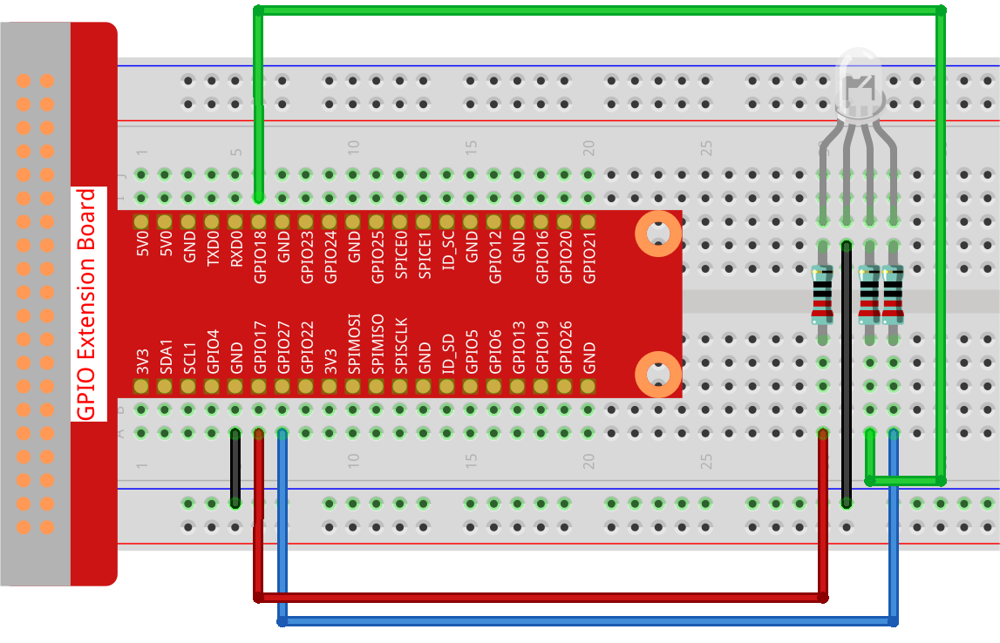

Nota
Ciao, benvenuto nella Community di Facebook dedicata agli appassionati di SunFounder Raspberry Pi, Arduino ed ESP32! Approfondisci le tue conoscenze su Raspberry Pi, Arduino ed ESP32 insieme ad altri appassionati.
Perché unirsi a noi?
Supporto Esperto: Risolvi problematiche post-vendita e sfide tecniche con l’aiuto della nostra comunità e del nostro team.
Impara e Condividi: Scambia consigli e tutorial per migliorare le tue competenze.
Anteprime Esclusive: Ottieni accesso anticipato agli annunci di nuovi prodotti e alle anteprime.
Sconti Speciali: Approfitta di sconti esclusivi sui nostri prodotti più recenti.
Promozioni Festive e Giveaway: Partecipa a concorsi e promozioni speciali.
👉 Sei pronto a esplorare e creare con noi? Clicca su [Qui] e unisciti subito!
1.1.2 LED RGB
Introduzione
In questo progetto, controlleremo un LED RGB per farlo lampeggiare in vari colori.
Componenti Necessari
Per questo progetto, avremo bisogno dei seguenti componenti.

Schema a Blocchi
Dopo aver collegato i pin di R, G e B a una resistenza di limitazione della corrente, connettili rispettivamente ai pin GPIO17, GPIO18 e GPIO27. Il pin più lungo (GND) del LED si collega al GND del Raspberry Pi. Quando ai tre pin vengono assegnati diversi valori PWM, il LED RGB mostrerà colori diversi.
T-Board Name |
physical |
BCM |
GPIO17 |
Pin 11 |
17 |
GPIO18 |
Pin 12 |
18 |
GPIO27 |
Pin 13 |
27 |

Procedure Sperimentali
Passo 1: Costruisci il circuito.
Passo 2: Apri il file di codice.
cd ~/davinci-kit-for-raspberry-pi/python-pi5
Passo 3: Esegui il codice.
sudo python3 1.1.2_rgbLed.py
Dopo l’esecuzione del codice, vedrai che l’RGB mostrerà rosso, verde, blu, giallo, rosa e ciano.
Avvertimento
Se appare l’errore RuntimeError: Cannot determine SOC peripheral base address, consulta Se gpiozero non funziona.
Codice
Nota
Puoi Modificare/Reimpostare/Copiare/Eseguire/Arrestare il codice qui sotto. Ma prima, è necessario andare al percorso del codice sorgente, come davinci-kit-for-raspberry-pi/python-pi5. Dopo aver modificato il codice, puoi eseguirlo direttamente per vedere l’effetto.
#!/usr/bin/env python3
from gpiozero import RGBLED
from time import sleep
# Definisci una lista di colori per il LED RGB in formato RGB (Rosso, Verde, Blu).
# Ogni componente del colore varia da 0 (spento) a 1 (massima intensità).
COLORS = [(1, 0, 0), (0, 1, 0), (0.2, 0.1, 1), (1, 1, 0), (1, 0, 1), (0, 1, 1)]
# Inizializza un LED RGB. Collega il componente rosso a GPIO 17, il verde a GPIO 18 e il blu a GPIO 27.
rgb_led = RGBLED(red=17, green=18, blue=27)
try:
# Cicla continuamente tra i colori definiti.
while True:
for color in COLORS:
# Imposta il LED RGB al colore corrente.
rgb_led.color = color
# Stampa il colore attuale sulla console.
print(f"Color set to: {color}")
# Attendi 1 secondo prima di passare al colore successivo.
sleep(1)
except KeyboardInterrupt:
# Gestisci un'interruzione da tastiera (Ctrl+C) per uscire dal ciclo in modo sicuro.
# GPIO Zero gestisce automaticamente la pulizia dei GPIO alla fine dello script.
pass
Spiegazione del Codice
Importa la classe
RGBLEDdalla libreriagpiozeroper il controllo di un LED RGB e la libreriatimeper implementare i ritardi nel codice.#!/usr/bin/env python3 from gpiozero import RGBLED from time import sleep # Definisci una lista di colori per il LED RGB in formato RGB (Rosso, Verde, Blu). # Ogni componente del colore varia da 0 (spento) a 1 (massima intensità).
La lista
COLORScontiene tuple che rappresentano diversi colori in formato RGB. Assegnando valori diversi di Modulazione di Larghezza di Impulso (PWM) a ciascuno dei pin R, G e B tramite l’attributorgb_led.color, il LED può produrre una varietà di colori. I valori PWM variano da 0 a 1, dove 0 rappresenta nessuna intensità (spento) e 1 rappresenta la massima intensità per ogni componente del colore.Ad esempio, impostando
rgb_led.color = (1, 0, 0)il LED diventa rosso, poiché imposta la massima intensità per il componente rosso lasciando spenti verde e blu. Combinazioni diverse di questi valori producono colori diversi, permettendo la creazione di una vasta gamma di colori sul LED RGB tramite il PWM.COLORS = [(1, 0, 0), (0, 1, 0), (0.2, 0.1, 1), (1, 1, 0), (1, 0, 1), (0, 1, 1)]
Inizializza un LED RGB collegando i componenti rosso, verde e blu rispettivamente ai pin GPIO 17, 18 e 27.
# Inizializza un LED RGB. Collega il componente rosso a GPIO 17, il verde a GPIO 18 e il blu a GPIO 27. rgb_led = RGBLED(red=17, green=18, blue=27)
Il ciclo
while True:cicla continuamente attraverso i colori definiti inCOLORS. Per ogni colore,rgb_led.color = colorimposta il LED su quel colore, esleep(1)mette in pausa per 1 secondo.try: # Cicla continuamente tra i colori definiti. while True: for color in COLORS: # Imposta il LED RGB al colore corrente. rgb_led.color = color # Stampa il colore attuale sulla console. print(f"Color set to: {color}") # Attendi 1 secondo prima di passare al colore successivo. sleep(1)
Questa sezione gestisce in modo sicuro un
KeyboardInterrupt(come premere Ctrl+C). Il comandopassviene usato come segnaposto per indicare che non è necessaria alcuna azione specifica in caso di interruzione, poiché GPIO Zero gestisce automaticamente la pulizia dei GPIO.except KeyboardInterrupt: # Gestisci un'interruzione da tastiera (Ctrl+C) per uscire dal ciclo in modo sicuro. # GPIO Zero gestisce automaticamente la pulizia dei GPIO alla fine dello script. pass